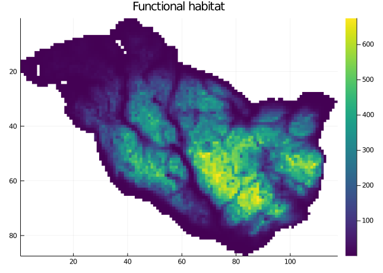
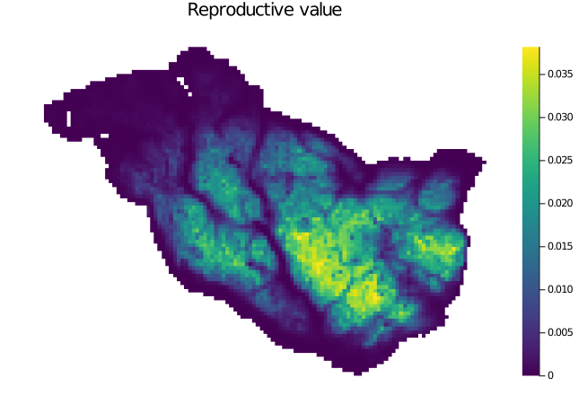
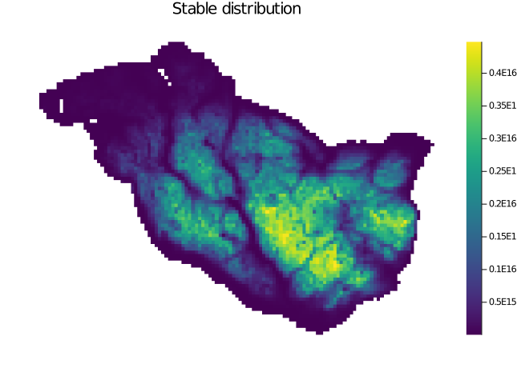
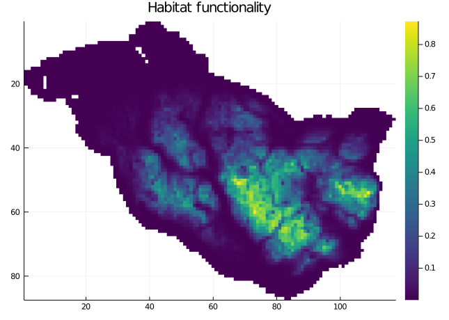
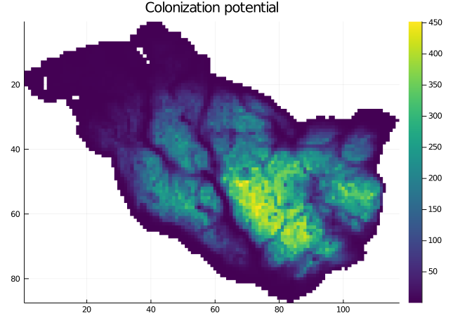

#using Pkg
#Pkg.activate(joinpath(ENV["HOME"], ".julia", "dev", "ConScape"))
using ConScape
using SparseArrays
using Statistics
using PlotsFunctional habitat
Here you will learn
Different ways to compute the amount of connected habitat for a pixel/cell or functional habitat in ConScape.
Demonstration of functional habitat computation
In this notebook we demonstrate the different ways the amount of connected habitat or `habitat functionality’ can be computed with ConScape.
Data import, Grid and GridRSP creation
See notebook Getting Started for a ‘basic workflow’ to learn about the fundamentals on data import and the creation of a ConScape Grid:
datadir = joinpath(ENV["HOME"], "Downloads", "input_maps")
outdir = joinpath(ENV["TMPDIR"], "figures")
if !isdir(outdir)
mkdir(outdir)
end"C:/Users/bram.van.moorter/Documents/ConScape_website/site/notebooks/data/"mov_prob, meta_p = ConScape.readasc(joinpath(datadir, "mov_prob_1000.asc"))
hab_qual, meta_q = ConScape.readasc(joinpath(datadir, "hab_qual_1000.asc"));non_matches = findall(xor.(isnan.(mov_prob), isnan.(hab_qual)))
mov_prob[non_matches] .= 1e-20
hab_qual[non_matches] .= 1e-20;θ = 1.0
adjacency_matrix = ConScape.graph_matrix_from_raster(mov_prob)
g = ConScape.Grid(size(mov_prob)...,
affinities=adjacency_matrix,
qualities=hab_qual,
costs=ConScape.mapnz(x -> -log(x), adjacency_matrix))
h = ConScape.GridRSP(g, θ = θ);┌ Info: cost graph contains 4835 strongly connected subgraphs
└ @ ConScape C:\Users\bram.van.moorter\.julia\packages\ConScape\spkWs\src\grid.jl:215┌ Info: removing 4834 nodes from affinity and cost graphs
└ @ ConScape C:\Users\bram.van.moorter\.julia\packages\ConScape\spkWs\src\grid.jl:225Habitat functionality: introduction
We have defined the functionality of habitat as its suitability and its functional connectivity to suitable habitat, which has its background in metapopulation theory ((Hanski 1999),(Hanski and Ovaskainen 2000)). Hanski and co-workers developed several of such metrics for patch-matrix representations of the landscape. In ConScape these different metrics are computed for continuous grid-based landscape representations. In the following we show the computation of the functionality of a pixel based: (1) on the RSP expected cost between source and target pixels and on the summation over sources or targets, (2) on eigenanalysis instead of summation, (3) on the survival probability instead of the RSP expected cost, (4) on the least-cost distance instead of the RSP expected cost. This last version corresponds to the popular ‘probability of connectivity’ ((Saura and Pascual-Hortal 2007)).
Functionality: RSP expected cost with summation
Before demonstrating the convenience function ConScape has to computate the amount of connected habitat, we will demonstrate explicitly the main building blocks going into this computation.
First, we need extract the vectors with the qualities \(s\) of the pixels as source \(s\) and target \(t\):
targetidx, targetnodes = ConScape._targetidx_and_nodes(h.g)
qˢ = [h.g.source_qualities[i] for i in h.g.id_to_grid_coordinate_list]
qᵗ = [h.g.target_qualities[i] for i in targetidx];Then, we compute the proximity matrix between \(s\) and \(t\) using the RSP expected cost:
K = map(t -> iszero(t) ? t : exp(-t/2000), ConScape.expected_cost(h));See Notebook ecological distance for a discussion of the proximity computation.
From the these quality vectors \(q^s\) and \(q^t\), and the proximity matrix \(\mathbf{K}\) we compute the ‘landscape matrix’ \(\mathbf{M}\):
M = qˢ .* K .* qᵗ';The landscape matrix \(\mathbf{M}\) can be summarized either through summation or Eigenanalysis, both can be used to quantify the functionality of a pixel as a source or as a target. The next section demonstrates Eigenanalysis, we first look at summation to summarize \(\mathbf{M}\). By summing over all rows, we get how well suitable target habitat is connected to suitable sources:
funcᵗ = vec(sum(M, dims=1)); #sum over rows
ConScape.plot_values(g, funcᵗ, title="Functional habitat", color=cgrad(:viridis))Similarly, by summing over all columns, we quantify how well suitable source habitat is connected to suitable target habitat:
funcˢ = vec(sum(M, dims=2)); #sum over columns
ConScape.plot_values(g, funcˢ, title="Functional habitat", color=cgrad(:viridis))We could then multiply the functionality of a pixel as a source and as a target to identify pixels that are simultaneously functional as source and target.
func_tot = funcˢ .* funcᵗ;Note that this last computation is only possible, if func\(^s\) and func\(^t\) are of the same length. In other words, the the target qualities cannot be represented as a sparse matrix (see Van Moorter et al. 2022 and Notebook performance for more details).
ConScape’s convenience function focuses on the ‘source functionality’ to allow for the usage of the sparse matrix representation of target qualities, which allows the computation of these metrics on even larger landscapes (see Notebook performance for explanation):
func = ConScape.connected_habitat(h, connectivity_function=
ConScape.expected_cost, distance_transformation=x -> exp(-x/2000));
ConScape.heatmap(func, yflip=true, color=cgrad(:viridis), title="Functional habitat")
is identical to the one in Fig. Figure 1.
Functionality: RSP expected cost with eigenanalysis
In addition to summarizing the landscape matrix \(\mathbf{M}\) through summation, we can also use Eigenanalysis:
vˡ, λ, vʳ= ConScape.eigmax(h, connectivity_function=
ConScape.expected_cost, distance_transformation=x -> exp(-x/2000))
vʳ = real.(vʳ)
vˡ = real.(vˡ);Where \(\lambda\) corresponds to the ‘metapopulation capacity’ in metapopulation ecology ((Hanski and Ovaskainen 2000)):
λ354.16197335389097The interpretation of this value outside the context of metapopulation theory still needs to be addressed in future research.
The right Eigenvector corresponds to the reproductive value, which is analogous to the functionality as a source:
ConScape.plot_values(g, vʳ, title="Reproductive value", color=cgrad(:viridis))
Note that the landscape matrix \(\mathbf{M}^{st}\) is transposed compared to (e.g. (Ovaskainen and Hanski 2003)) and therefore the right and left Eigenvectors switched interpretation.
The left Eigenvector then corresponds to the stable distribution, which is somewhat analogous to the functionality as a target:
ConScape.plot_values(g, vˡ, title="Stable distribution", color=cgrad(:viridis))
Just as (Ovaskainen 2003) we can multiply the left and right Eigenvectors:
eigenvec = vˡ .* vʳ;An important note, Eigenanalysis requires the landscape matrix \(\mathbf{M}^{st}\) to be square, hence the sparse matrix representation of the target qualities is not possible (see main text and Notebook performance for more details). Hence, we cannot rely on the ‘landmark’ approach to reduce the computational demands, which currently limits this type of eigenanalysis to relatively coarse landscape representations.
Functionality: survival probability with summation
See also Notebook ecological distance for more details on the different distance and proximity metrics that can be used. We now demonstrate the use of the survival probability as an alternative metric to compute the amount of suitable target habitat that is functionally connected to a suitable source pixel:
func_surv = ConScape.connected_habitat(h,
connectivity_function=ConScape.survival_probability);
ConScape.heatmap(func_surv, yflip=true, title="Habitat functionality", color=cgrad(:viridis))
See Notebook dispersal mortality for more details on the use of mortality data as the basis for survival connectivity.
Functionality: least-cost distance with summation
Our final demonstration to quantify the amount of connected habitat is related to the ‘probability of connectivity’ (Saura and Pascual-Hortal 2007) and the ‘cost-benefit analysis’ ((Drielsma, Ferrier, and Manion 2007),(Drielsma, Manion, and Ferrier 2007)). These approaches both are built from the least-cost distance between source and target pixels. Although the RSP expected cost in theory includes the least-cost distance for \(\theta \rightarrow \infty\), it is not an efficient algorithm to use for least-cost based distances. We therefore implemented convenience functions to use Julia’s implementation of the Dijkstra algorithm to compute the least-cost distance:
func_lc = ConScape.connected_habitat(g, connectivity_function=
ConScape.least_cost_distance, distance_transformation=x -> exp(-x/40));The ‘connectivity of a landscape’ from ((Drielsma, Manion, and Ferrier 2007)) is then the sum of all elements in the landscape matrix \(\mathbf{M}^{st}\):
CL=sum(filter(x -> !isnan(x), func_lc))518459.3477832595And the ‘probability of connectivity’ further divides this ‘connectivity of the landscape’ by the squared area of the landscape ((Saura and Pascual-Hortal 2007)):
PC=CL/sum(map(x -> isnan(x) ? 0 : 1, func_lc))^20.01814760383958709In addition, as above we can compute the source and target functionalities using the least-cost distance by respectively summing over all columns or all rows of the landscape matrix \(\mathbf{M}^{st}\), this corresponds to the colonization potential in (Drielsma, Ferrier, and Manion 2007):
ConScape.heatmap(func_lc, yflip=true, title="Colonization potential", color=cgrad(:viridis))
Summary
ConScape allows for several different ‘habitat functionality’ metrics by combining different distance or proximity metrics to quantify the connectivity between sources and targets with different ways of summarizing across sources and/or targets. Theoretically, the RSP expected cost is a generalized version of the least-cost distance (i.e. RSP expected cost equals the least-cost distance for \(\theta \rightarrow \infty\)), although numerical issues with the current algorithms prevent the usage of the RSP expected cost to replace the least-cost distance in actual applications. In addition to the RSP expected cost (and least-cost distance), ConScape also offers the survival probability to quantify the connectivity between source and target pixels. Two summary statistics have been proposed to quantify habitat functionality: summation and eigenanalysis. Summation was first proposed in (Hanski 1999) with the ‘neighborhood habitat area index’, whereas (Hanski and Ovaskainen 2000) proposed eigenanalysis to quantify the ‘metapopulation capacity’ for metapopulation persistence. Both of these approaches have been implemented in ConScape, however, the computational requirements for eigenanalysis may prevent this approach on large landscapes.
References
Drielsma, Michael, Simon Ferrier, and Glenn Manion. 2007. “A Raster-Based Technique for Analysing Habitat Configuration: The Cost–Benefit Approach.” Ecological Modelling 202 (3-4): 324–32.
Drielsma, Michael, Glenn Manion, and Simon Ferrier. 2007. “The Spatial Links Tool: Automated Mapping of Habitat Linkages in Variegated Landscapes.” Ecological Modelling 200 (3-4): 403–11.
Hanski, Ilkka. 1999. Metapopulation Ecology. Oxford University Press.
Hanski, Ilkka, and Otso Ovaskainen. 2000. “The Metapopulation Capacity of a Fragmented Landscape.” Nature 404 (6779): 755.
Ovaskainen, Otso. 2003. “Habitat Destruction, Habitat Restoration and Eigenvector–Eigenvalue Relations.” Mathematical Biosciences 181 (2): 165–76.
Ovaskainen, Otso, and Ilkka Hanski. 2003. “How Much Does an Individual Habitat Fragment Contribute to Metapopulation Dynamics and Persistence?” Theoretical Population Biology 64 (4): 481–95.
Saura, Santiago, and Lucı́a Pascual-Hortal. 2007. “A New Habitat Availability Index to Integrate Connectivity in Landscape Conservation Planning: Comparison with Existing Indices and Application to a Case Study.” Landscape and Urban Planning 83 (2): 91–103.